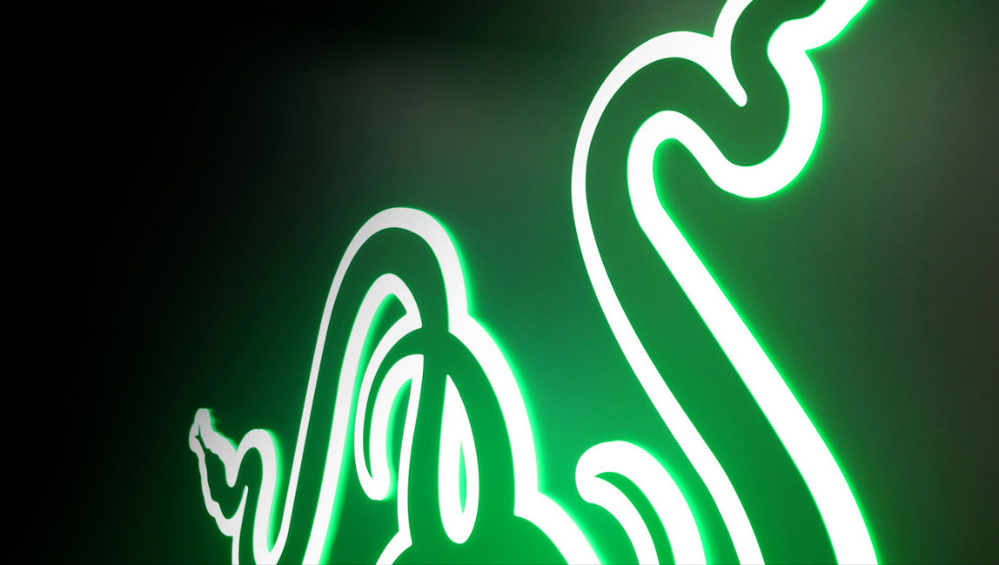

Razer USA Ltd. doing business as Razer Inc. (stylized as RΛZΞR), is a Singaporean-founded[2] American company founded by Min-Liang Tan and Robert Krakoff, and headquartered in San Francisco, California, which specializes in computer hardware marketed specifically to gamers. Razer is dedicated to the creation and development of products mainly focused on PC gaming such as laptops, tablet computer, various PC peripherals, wearables, and accessories. The Razer brand is currently being marketed under Razer USA Ltd.
Razer™ is the world’s leading lifestyle brand for gamers.
The triple-headed snake trademark of Razer is one of the most recognized logos in the global gaming and esports communities. With a fan base that spans every continent, the company has designed and built the world’s largest gamer-focused ecosystem of hardware, software and services.
Razer’s award-winning hardware ranges from high-performance gaming peripherals (for the PC and console platforms) to the Razer Blade gaming laptops. Razer’s software platform, with over 35M users, includes Razer Synapse (an Internet of Things platform), Razer Chroma (a proprietary RGB lighting technology system), and Razer Cortex (a game optimizer and launcher). Razer services include Razer zGold, one of the world’s largest virtual credit services for gamers, which allows gamers to purchase virtual goods and items from over 2,500 different games.
The company has a global footprint with 9 offices worldwide and is recognized as the leading brand for gamers in the US, Europe and China.
Founded in 2005 and dual-headquartered in San Francisco and Singapore, Razer is backed by institutional investors such as IDG-Accel, Intel Capital and Horizons Ventures.
